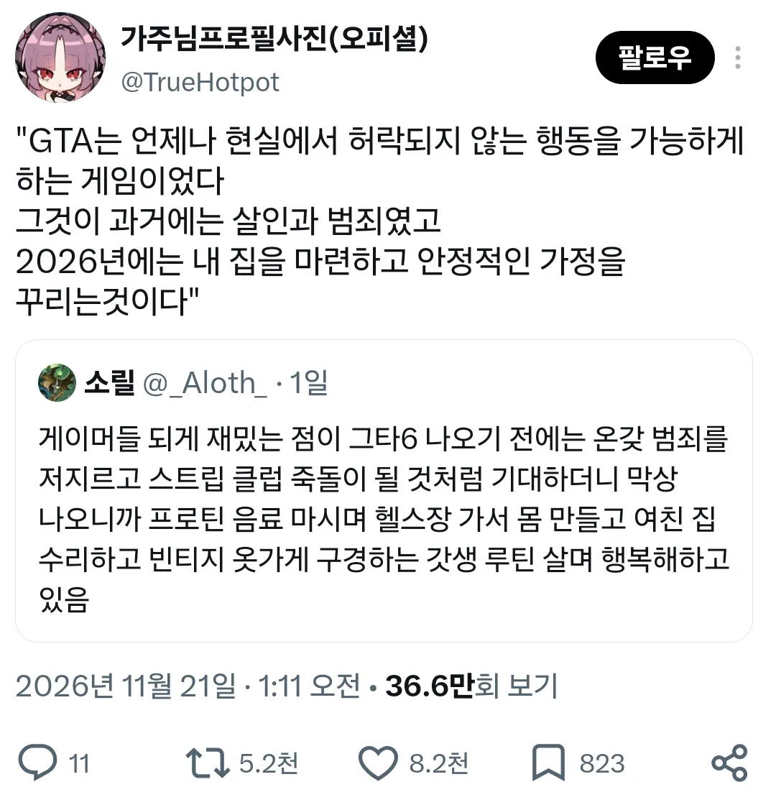

Gta는 언제나 현실에서 허락되지 않는 행동을 가능하게 하는 게임이었다
댓글
심즈?
ㄴㄴ 심즈는 맞는데 심연즈
심즈 무시하지 마라
심즈도 심연이 있다....
설마 그거 말하는거면 음
심즈가 더 심연이긴 하지ㅋㅋㅋㅋ
심즈가 그타보다 야스 더 많이 함
현실 탈출 시뮬레이터 ㅋㅋ
순애보
살인 약탈 방화 총격은 이제 현실에서...ㅋㅋㅋㅋㅋㅋ
설득력이 있다
둘 다 현실에서 못하는거긴 하네
같이사는집이지 여친집은 아니지 근데 이게 스토리모드라 그런건진 몰라도 여자 고르는거에 내 자유가 없다는게 좀 그래 마이크도 친구 골라사귈수 없었으니 뭐
아 맞네
ㅋㅋㅋㅋㄹㅇㅋㅋ 나중에 집가격 얼마나되나 궁굼한데 알아보진않고 열심히 모으긴함
그러네 ㅋㅋㅋ
ㅠㅠ